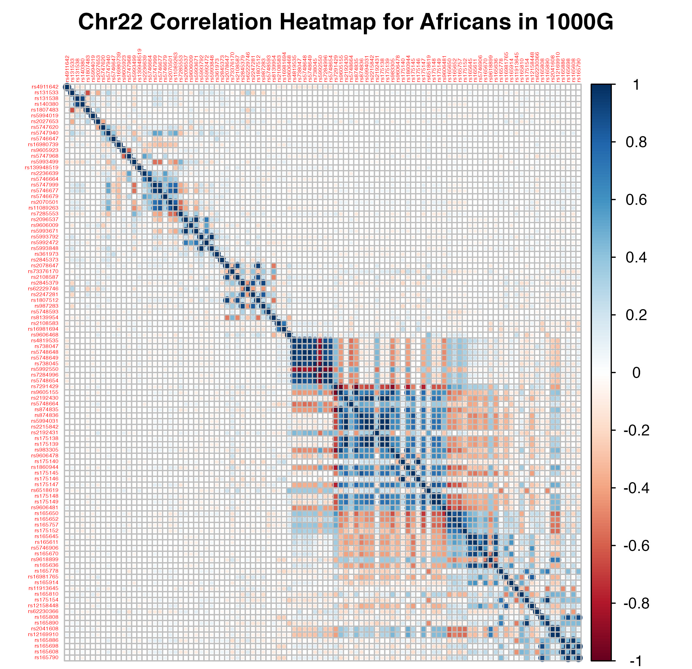
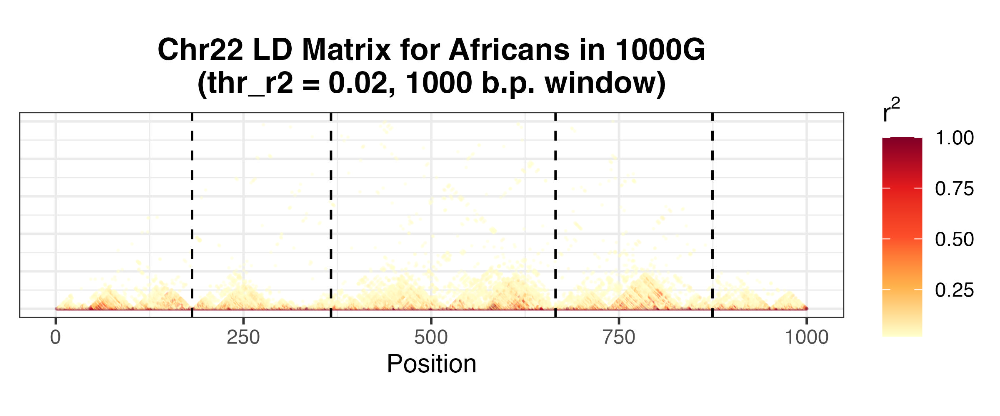
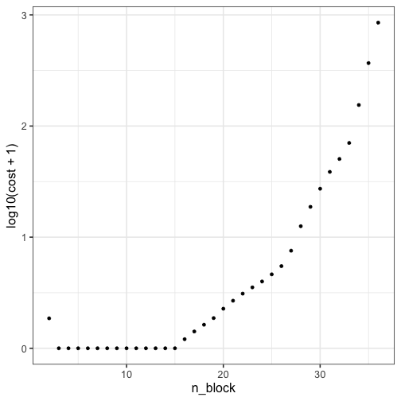

We are grateful to Florian Privé, Senior Researcher at Aarhus University, for feedback on accuracy and enhancing accessibility of this vignette.
In our paper, we describe how our method is also a test of feature independence, provided the observations are exchangeable. In this vignette, we will
- show how this test of feature independence can be applied in a statistical genomics setting to a problem known as linkage disequilibrium (LD) splitting
- discuss how our test may provide evidence that smaller populations, being more “genetically exchangeable,” provide better LD reference panels than larger superpopulations
To enhance reproducibility, we have made available (here) the superpopulation-level and population-level 1000 Genomes data used in our analyses.
LD Splitting
Linkage disequilibrium (LD) is the non-random association of alleles at different loci in a population, which can arise from low rates of genetic recombination, drift, and selection. Given empirical data on individual genomes, LD manifests in correlations between variants that are close to one another. Below is an example of a correlation matrix computed on Chromosome 22 variants from a cohort of \(652\) African individuals belonging to the 1000 Genomes Project (1KG). Correlation matrices are more commonly referred to as LD matrices.

Pairwise LD between first 100 variants lying in Chromosome 22, for a cohort of 652 Africans participating in the 1000 Genomes Project. Plot generated from corrplot::corrplot.
Several applications of statistical genomics involve working with genome-wide LD matrices (i.e., a \(P\times P\) correlation matrix with \(P\sim 10^6\) variants); these include
- summary statistics imputation (Pasaniuc et al., 2014; Julienne et al., 2019)
- simulation studies (Mak et al., 2017; Mancuso et al., 2019)
- model fitting for polygenic score computation (Privé et al., 2021+; Spence et al., 2022+)
Because the mathematical operations involved can scale quadratically or cubically in the number of variants, accomplishing these tasks can be challenging if working with the full LD matrix. The block structure of the LD matrix, as seen above, suggests that the LD matrix can be split into blocks, whereby distinct blocks contain variants that are approximately independent of one another. Working with these blocks allows the mathematical operations to be run on smaller-sized matrices (saves memory), and moreover makes the task parallelizable (saves time).
Concretely, we wish to find splitting points in the LD matrix, so that contiguous variants lying between two split points define a block, with distinct blocks approximately independent of each other. Below is an example of splitting points for the LD matrix of 1KG African individuals we saw earlier.

Pairwise squared correlations for first 1000 variants, with squared correlations less than 0.02 removed for better visualisation. Block boundaries generated from bigsnpr::snp_ldsplit.
LD Splitting Algorithms
Several algorithms exist to partition genomes into approximately independent blocks of variants.
- ldetect (Berisa and Pickrell, 2016)
- Big-LD (Kim et al., 2018)
- snp_ldsplit (Privé, 2022)
In this article, we focus on the last method, which uses dynamic programming to efficiently find optimal LD block splits.
Test of Independence
The goal of splitting a large LD matrix into smaller, mutually “approximately independent” submatrices is to leverage these matrices as reasonable measures of local genomic correlations. An implicit assumption is that the cohort from which the LD matrix is derived is unstratified, such that regions of recombination are roughly homogeneous within the cohort. This can be interpreted as an exchangeability assumption on the individuals: if there were two or more subpopulations that have distinct genome-wide LD patterns, given that LD blocks are a function of LD patterns, we would not expect the same bandedness, or split points, to be shared between them. (As previous papers like Evans and Cardon, 2005 and De La Vega, 2005 have shown, there are population differences in LD patterns, which are driven by unique population histories.)
Nevertheless, should we assume the individuals from which the LD matrix is computed are exchangeable, we may proceed to identify split points that demarcate approximately independent regions.
Approaches like ldetect, Big-LD and snp_ldsplit all rely on deterministic approaches to identifying an optimal LD split. In particular, once the optimal split is found, it is used for downstream tasks. A more careful approach is to consider whether the split, which yields approximately independent blocks, is consistent with the null hypothesis that both the individuals are exchangeable and the blocks of features are independent. Because our method explicitly requires these two conditions for the null hypothesis, it readily applies to this setting.
Application of flinty
We use flinty to test for independence of the contiguous blocks. Specifically, given a genotype matrix \(\mathbf{X}\), we run flinty as a test of independence after the LD block partitioning algorithm is run on the LD matrix \(\boldsymbol{\Sigma}=\frac{1}{N-1}\mathbf{X}^T\mathbf{X}\) (where \(\mathbf{X}\) is scaled and centered prior to computing the covariance). The cartoon below illustrates the question we wish to answer.

We examine the case of \(652\) Africans from 1KG and focus on Chromosome 22 for exposition. We first subset to variants from Chromosome 22, and moreover discard rare variants, defined as variants with minor allele frequency less than or equal to \(0.05\). We construct the LD matrix and run snp_ldsplit to obtain split points. We finally use these split points to define block boundaries in the original genotype matrix, and run the block version of flinty to evaluate statistical independence between the blocks.
## Perform test of independence on blocks of SNPs for 1KG Africans
# Load data and compute minor allele frequency
library(tidyverse)
library(bigsnpr)
test <- snp_attach("~/Documents/research/pgs/030121/super_pop_files/AFR/1000G_AFR.rds")
G <- test$genotypes
maf_gw <- snp_MAF(G)
test$map$MAF <- maf_gw
# Compute correlation matrix, discarding rare variants
corr2 <- snp_cor(G, ind.col = which(test$map$chromosome == 22 & test$map$MAF > 0.05)) # 18791 x 18791
res <- snp_ldsplit(corr2, thr_r2 = 0, min_size = 500, max_size = 10000, max_K = 40)
argmin <- which(res$cost == min(res$cost))
# Get split points to feed into flinty
all_ind <- head(res$all_last[[argmin]], -1)
G_chr22_2 <- G[,which(test$map$chromosome == 22 & test$map$MAF > 0.05)]
# Run test of independence
library(flintyR)
source("../R/auxiliary.R")
source("../R/getPValue.R")
library(doParallel); registerDoParallel()
getPValue(G_chr22_2,
block_boundaries = c(1,all_ind + 1),
p = 1,
nruns = 3000,
type = "both")
#> unbiased valid
#> 0.0000000000 0.0003332223We observe a very small \(p\)-value (\(\ll 0.05\)), suggesting that the blocks are not statistically independent.
To verify the stability of the procedure, we repeat the block splitting step multiple times, varying a few parameters:
-
thr_r2(the threshold of squared correlation, below which the algorithm ignores its contribution to the loss function): \(0, 0.05, 0.1\) -
min_sizeandmax_size(the minimum and maximum block sizes): minimum ranged in \(\{50,100,500\}\), maximum ranged in \(\{500,5000,10000\}\) -
max_K(maximum number of blocks): this is adjusted based on themin_sizeset (must be larger than \(P/\texttt{min_size}\), where \(P\) is the number of variants considered)
We persistently obtained very small \(p\)-values (\(\ll 0.05\)), despite possibly different optimal split points reported by snp_ldsplit.
This finding suggests that either (1) there exist no LD splits that result in statistically independent blocks of SNPs (there might, however, be other ways to cluster the SNPs that relax the block requirement); (2) the individuals making up the data were not exchangeable to begin with.
Subsetting to Yorubans Produces Independent LD Block Split
We suspect the failure to identify LD splits that produce independent blocks is owing to lack of exchangeability of the individuals. There are African Caribbean, Yoruban, and Esan individuals making up the 1KG African superpopulation, for instance. (See this list for details.) These populations have distinct recent population histories that may induce distinct patterns of linkage between variants.
We show how our test might support this explanation. We repeat the same steps enumerated above, this time on the subset of Yoruban individuals. Because the sample size is now small (\(N=108\) Yoruban individuals), we now use a higher thr_r2 of \(0.2\) to ensure that the LD splitting algorithm accounts for spurious positive correlations (i.e., \(r^2>0\) purely by chance). Note we have also performed this analysis for smaller thr_r2 (e.g., \(0\)), and our findings below are invariant to the smaller threshold.
## Perform test of independence on blocks of SNPs for 1KG Yorubans
# Load data and compute minor allele frequency
yri_test <- snp_attach("~/Documents/research/pgs/030121/pop_files/YRI/1000G_YRI.rds")
yri_G <- yri_test$genotypes
yri_maf_gw <- snp_MAF(yri_G)
yri_test$map$MAF <- yri_maf_gw
# Compute correlation matrix, discarding rare variants
yri_corr2 <- snp_cor(yri_G, ind.col = which(yri_test$map$chromosome == 22 & yri_test$map$MAF > 0.05)) # 18376 x 18376
res <- snp_ldsplit(yri_corr2, thr_r2 = 0.2, min_size = 500, max_size = 10000, max_K = 40)
argmin <- max(which(res$cost == min(res$cost)))
# Get split points to feed into flinty
all_ind <- head(res$all_last[[argmin]], -1)
# How many blocks are there?
print(paste0("The number of blocks found is ", length(all_ind) + 1))
#> [1] "The number of blocks found is 15"
# Subset
yri_G_22_2 <- yri_G[,which(yri_test$map$chromosome == 22 & yri_test$map$MAF > 0.05)]
# Run test of independence
getPValue(yri_G_22_2,
block_boundaries = c(1,all_ind + 1),
p = 1,
largeP = FALSE,
nruns = 3000,
type = "both")
#> unbiased valid
#> 0.6506667 0.6507831We find that the \(p\)-value is now insignificant at the \(\alpha=0.05\) level.
To further ensure that the larger \(p\)-value is not driven by using a smaller subsample of individuals, we perform a random subsampling analysis, in which we draw \(108\) individuals at random from the \(652\) African individuals, perform block splitting for that subset of individuals, and run flinty. We perform \(250\) random subsampling routines.
## Perform test of independence on blocks of SNPs for 1KG random subsamples
## [!] Not run here (takes ~ 3min x 250 = 750min on Macbook Pro)
# Create dataframe to store results
results.df <- data.frame(NBLOCKS = numeric(),
UNBIASED = numeric(),
VALID = numeric())
# Perform subsampling experiment
for (i in 1:250) {
message(date(),": Running experiment for seed ", i)
set.seed(i)
ind.ids <- sort(sample(1:652, 108))
subsamp.maf_gw <- snp_MAF(G, ind.row=ind.ids)
subsamp.corr <- snp_cor(G, ind.col = which(test$map$chromosome == 22 & subsamp.maf_gw > 0.05))
message(date(),": Performing split finding")
subsamp.res <- snp_ldsplit(subsamp.corr,
thr_r2 = 0.2,
min_size = 500,
max_size = 10000,
max_K = 40)
argmin <- max(which(subsamp.res$cost == min(subsamp.res$cost)))
# Get split points to feed into flinty
all_ind <- head(subsamp.res$all_last[[argmin]], -1)
# How many blocks are there?
print(paste0("The number of blocks found is ", length(all_ind) + 1))
# Subset
subsamp.G <- G[ind.ids,
which(test$map$chromosome == 22 & subsamp.maf_gw > 0.05)]
# Run test of independence
message(date(),": Performing independence test")
subsamp.pvals <- getPValue(subsamp.G,
block_boundaries = c(1,all_ind + 1),
p = 1,
largeP = FALSE,
nruns = 3000,
type = "both")
print(subsamp.pvals)
results.df <- rbind(results.df,
data.frame(NBLOCKS = length(all_ind) + 1,
UNBIASED = subsamp.pvals[1],
VALID = subsamp.pvals[2]))
}
# Save results dataframe
write.csv(results.df, row.names = FALSE, file = "subsampling_analysis.csv")
## Summarize results
results.df <- read.csv("subsampling_analysis.csv")
# Print visual and quantitative summary
skimr::skim(results.df)| Name | results.df |
| Number of rows | 250 |
| Number of columns | 3 |
| _______________________ | |
| Column type frequency: | |
| numeric | 3 |
| ________________________ | |
| Group variables | None |
Variable type: numeric
| skim_variable | n_missing | complete_rate | mean | sd | p0 | p25 | p50 | p75 | p100 | hist |
|---|---|---|---|---|---|---|---|---|---|---|
| NBLOCKS | 0 | 1 | 29.97 | 1.09 | 26 | 30 | 30 | 31 | 32 | ▁▁▃▇▆ |
| UNBIASED | 0 | 1 | 1.3e-6 | 2.1e-5 | 0 | 0 | 0 | 0 | 3.3e-4 | ▇▁▁▁▁ |
| VALID | 0 | 1 | 3.4e-4 | 2.1e-5 | 3.3e-4 | 3.3e-4 | 3.3e-4 | 3.3e-4 | 6.7e-4 | ▇▁▁▁▁ |
# Perform FDR correction
print("Any subsample and LD splits producing an insignificant p-value at 0.05?")
#> [1] "Any subsample and LD splits producing an insignificant p-value at 0.05?"
print(any(p.adjust(results.df$VALID, method="BH") >= 0.05))
#> [1] FALSEWe find that the \(250\) random subsamples led to LD splits that have, on average, about twice the size of the number of blocks identified on the Yoruban subsample. We also see that the \(p\)-values are all significant at a \(0.05\) false discovery rate threshold.
Altogether, our analysis shows that for the Yoruban population, snp_ldsplit produced a set of split points that partition the variants into blocks that are statistically independent.
Statistical Approach Differs from Optimization Approach
As secondary analysis, we also explore other “non-optimal” choices of block splits identified by snp_ldsplit. (The optimal split is the one that minimizes the sum of squares of correlations between blocks.) We specifically consider whether non-optimal LD splits could produce statistically independent blocks of variants for the population.
## Secondary analysis of independence
# Visualize loss function (cost) as function of number of blocks
qplot(n_block, cost, data = res) + theme_bw(16) + scale_y_log10()
#> Warning: Transformation introduced infinite values
#> in continuous y-axis
print(paste0("The minimum cost indices are ", which(res$cost == min(res$cost))))
#> [1] "The minimum cost indices are 2"
#> [2] "The minimum cost indices are 3"
#> [3] "The minimum cost indices are 4"
#> [4] "The minimum cost indices are 5"
#> [5] "The minimum cost indices are 6"
#> [6] "The minimum cost indices are 7"
#> [7] "The minimum cost indices are 8"
#> [8] "The minimum cost indices are 9"
#> [9] "The minimum cost indices are 10"
#> [10] "The minimum cost indices are 11"
#> [11] "The minimum cost indices are 12"
#> [12] "The minimum cost indices are 13"
#> [13] "The minimum cost indices are 14"
# Use suboptimal choices
for (i in c(3,20,35)) {
all_ind <- head(res$all_last[[i]], -1)
print(paste0("The (valid) p-value for cost index = ",
i, " is ",
getPValue(yri_G_22_2,
block_boundaries = c(1,all_ind + 1),
p = 1,
largeP = FALSE,
nruns = 3000,
type = "both")[2]))
}
#> [1] "The (valid) p-value for cost index = 3 is 0.849050316561146"
#> [1] "The (valid) p-value for cost index = 20 is 0.637454181939354"
#> [1] "The (valid) p-value for cost index = 35 is 0.0336554481839387"The insignificant \(p\)-values for some choices of indices \(i\) suggest that there may be other ways to split the Chromosome 22 LD matrix for the Yoruban population, which produces statistically valid approximately independent blocks. They also demonstrate how our approach not only differs fundamentally from, but also complements, deterministic approaches like snp_ldsplit: instead of minimizing a quantity associated with the LD matrix and the identified blocks, we verify statistical properties that should be satisfied by the blocks output by LD splitting.